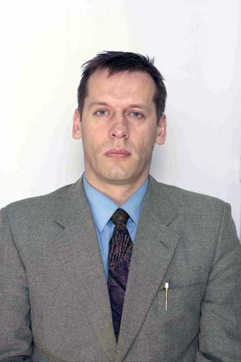

БУЛЕНОК ВАДИМ ГЕННАДЬЕВИЧ
Занимаемая должность (должности): доцент.
Ученая степень: кандидат физико-математических наук
e-mail: vadim@tspu.edu.ru
Данные о повышении квалификации и (или) профессиональной переподготовке (за последние 5 лет): Диплом о переподготовке по программе "Информатика и математика", 2016; Повышение квалификации "Совершенствование образовательного процесса с использованием дистанционных технологий", 2014; Повышение квалификации "Возможности информационно-коммуникационных технологий для эффективного функционирования электронной информационно-образовательной среды ВУЗа", 2016; Повышение квалификации "Специфика применения современных образовательных технологий в области естественнонаучных дисциплин в ВУЗе (математика, информатика, информационные системы и технологии)", 2018; Повышение квалификации "Обучение оказанию первой помощи", 2017; Повышение квалификации "Проектирование и реализация образовательной деятельности в области дисциплин по информатике при переходе на ФГОС ВО 3++", 2018; Повышение квалификации "Возможности информационно-коммуникационных технологий для эффективного функционирования электронной информационно-образовательной среды ВУЗа", 2019
Основные публикации: 1.Буленок В.Г., Пьяных Е.Г. Wiki-среда в организации коллективной работы школьников // Материалы Региональной научно-практической интернет-конференции "Современный урок в контексте реализации Федеральных государственных образовательный стандартов общего образования второго поколения (ФГОС)" (21-24 марта 2013 г.). Томск: издательство ТГПУ, 2013. С.68-70 2. Буленок В. Г., Багров В. Г., Бордовицын В. А., Куликова А. LINEAR POLARIZATION OF RADIATION FROM AN ARBITRARILY MOVING RELATIVISTIC CHARGE // TSPU Bulletin. 2014. 12(153). - P. 15-19. 3. КИНЕМАТИЧЕСКАЯ ИДЕНТИФИКАЦИЯ УГЛОВОГО РАСПРЕДЕЛЕНИЯ МОЩНОСТИ И ЛИНЕЙНОЙ ПОЛЯРИЗАЦИИ ИЗЛУЧЕНИЯ ПРОИЗВОЛЬНО ДВИЖУЩЕГОСЯ ЗАРЯДА, Багров В.Г., Бордовицын В.А., Буленок В.Г., Куликова А.В., Известия высших учебных заведений. Физика. 2015. Т. 58. № 2. С. 14-22.